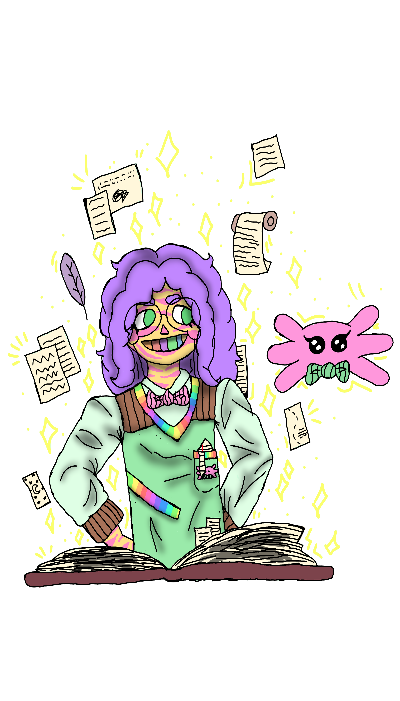

Milo
Os livros podem nos levar para outros mundos quando lemos com carinho, e
no caso de Milo isso era mais do que literal.
Milo vivia dentro de um livro de aventuras, onde era o protagonista de uma franquia de histórias, acompanhado
sempre de sua fiel escudeira, Manu, a salamandra! Milo e Manu amavam ajudar as
pessoas, e um dia descobriram que estavam vivendo dentro de um livro, o que
lhes animou para que pudessem ajudar mais pessoas fora do livro, já que amavam
ajudar.
Milo fica metade do tempo na terra, vivendo na ruazinha e acolhendo seus
amigos, sendo um porto seguro e de ajuda. Milo também volta ao seu livro de origem,
para fazer companhia a Manu, já que Manu não consegue sair de lá como ele. Milo se
compromete fortemente a ajudar seus amigos diariamente usando de seu carinho e
dedicação.

